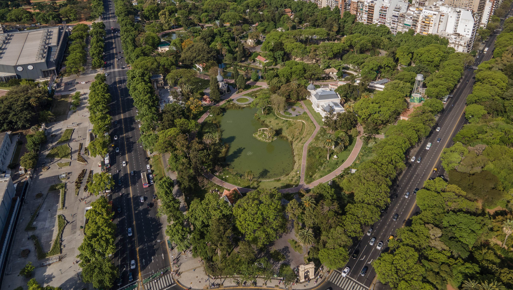

Los Pulmones Verdes de Buenos Aires
Parques emblemáticos que tejen la identidad natural de la ciudad. Naturaleza, historia y cultura al alcance de un paseo.

Una ciudad que se recorre a paso lento
Pulmón Verde reúne cuatro parques de Buenos Aires en un solo recorrido. Te mostramos qué ver, cómo llegar y cuánto tiempo dedicarle a cada uno, para que armes tu paseo sin vueltas.
-
Naturaleza
Lagos, senderos, árboles centenarios y fauna a minutos del microcentro y los barrios.
-
Historia
Jardines históricos, monumentos y edificios que cuentan cómo creció la ciudad.
-
Cultura
Ferias, museos, anfiteatros y actividades al aire libre para ir solo, en pareja o en familia.
Conocé los Parques
Mapa del recorrido
Un orden sugerido para recorrer los cuatro parques de sur a norte. Tocá un marcador o un parque de la lista para verlo en el mapa. La línea une los parques en orden y no marca calles.
Mapa: © colaboradores de OpenStreetMap.
-
1. Parque Centenario
Caballito · 1 a 2 h
-
2. Parque Thays
Recoleta
-
3. Ecoparque
Palermo · 1,5 a 3 h
-
4. Parque Barrancas
Belgrano
Página próximamente
Experiencias para vivir los parques
Además de pasear por tu cuenta, podés solicitar una experiencia y organizar tu visita con anticipación.
-
Visita guiada
Un recorrido con guía por los puntos más interesantes del parque que elijas.
Solicitar -
Picnic en el parque
Una tarde al aire libre pensada para ir en familia o con amigos.
Solicitar -
Taller de naturaleza
Una actividad educativa para aprender sobre la flora y la fauna de la ciudad.
Solicitar
Recomendado: la ruta completa
Visitá los cuatro parques en el orden sugerido. Conviene repartirlos en dos o más días y salir temprano.
Ver el orden sugeridoSobre nosotros
Pulmón Verde es un proyecto del Grupo 11 de la materia Diseño y Desarrollo Web. Nació para mostrar los espacios verdes más emblemáticos de Buenos Aires y facilitar su visita con información clara y práctica.
Cada integrante investigó, diseñó y desarrolló la página de uno de los parques. Este sitio es un trabajo académico: las reservas son una simulación y no se procesan pagos.
Reservar una visita